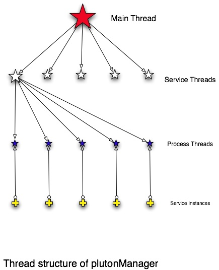

![[Pluto Charon Image]](images/pluto-charon.jpg)
The Pluton Framework: Design Details
Most of the design details of the Pluton Framework are embedded in the
plutonManager, the client API and the service API. Whilst not overly complicated,
there are a couple of design aspects of these components which may be
of general interest. This document highlights those
aspects. There is also a background
document which is worth reading prior to diving into this document.
The plutonManager is a C++ program which has three main responsibilities:
- Create the lookup and rendezvous mechanisms
- Manage service instances
- Collect and log performance data written to the Reporting Sockets
These responsibilities are largely passive as the plutonManager plays
no direct role in the exchange of requests between clients and
services.
The plutonManager is a single-threaded program which uses State Threads to manage
a potentially large collections of file descriptors and events. There
are three types of threads:
The Main thread is responsible for:
- detecting configuration reload requests (via SIGHUP) and creating service threads for
each new or changed configurations
- detecting service exits (via SIGCHLD and wait4())
- generating periodic status reports
Service threads are created by the Main thread -
one per service configuration - and they are responsible for:
- processing service performance reports written to the Reporting Socket
- adjusting the instance count for the service and create a Process
thread for each new instance created
- monitoring the Rendezvous socket when no services are active
Process threads are created by a Service thread -
one per active process - and they are responsible for:
- monitoring
STDERR of the service for logging traffic
- Checking for stalled processes stuck on a request
- Check for an idle process to terminate
State Threads are extremely light-weight, so having one thread per
process is cheap and significantly simplifies the plutonManager
implementation by making it procedural rather than event-driven. This
diagram shows the thread relationships:

(Click on image for a larger version).
Service Keys are pervasive throughout the Pluton Framework. They have
the following dot-separated syntax:
Application.Function.Version.Serialization
Generally speaking, there is a one-to-one mapping between Service
Keys used by the clients, the configuration file name, the Rendezvous
Socket and the corresponding service instances. The one exception is
the configuration wild-card feature. If a Service Configuration
filename contains a zero length "Function", this indicates that the
service can accept any function not satisfied by a specific match, eg:
Application..Version.Serialization
Currently, this configuration wild-card feature is the only reason
for the existence of the share memory lookup structure - to abstract
the relationship between the Service Key lookup and the Rendezvous
Socket. In future, further abstractions may be added to support
wild-card matching of versions or aliasing features as determined by
user demand.
The Service Configuration file defines the maximum number of service
instances allowed. The objective of the plutonManager is to provide
just enough services to enable fully concurrent access while staying
within the configured limits. The service API participates in this
process by sending periodic reports indicating the level of activity,
response times and the like.
The algorithm for calculating the appropriate number of instances
is evolving, but currently the algorithm treats the service instances
as a queue and adjusts the number of instances to keep the queue at
the configured level of occupancy. Other factors that affect the
creation and destruction of instances include:
- the configured request count limit beyond which an instance exits
- the configured inactivity time limit beyond which an idle instance
exits (this feature only works on FreeBSD platforms that have the LIFO accept-order
patch applied at Yahoo)
Additionally, the plutonManager inhibits the rate at which new service
instances are created to ensure a balanced load on the system. Factors
which affect this rate are:
- the exit rate and exit type of instances - abnormal exits prior to
the complete processing of at least one request can defer
the creation of new instances
A variety of techniques are used to communicate between the
plutonManager and the service instances: exit status, signals, shared
memory, environment variables, specially arranged file
descriptors and a named pipe - phew! This plethora of techniques is
largely a trade-off between performance and flexibility.
Since the plutonManager forks the instance, it uses SIGCHLD and
wait4() to collection exit status and resource usage
whenever a service
instance exits.
The plutonManager send various signals to the service.
| SIGURG | to bring a service off an accept() call to check status |
| SIGINT | first attempt to shutdown a service instance |
| SIGTERM | second attempt to shutdown a service instance |
| SIGKILL | third and final attempt to shutdown a service instance |
SIGURG is the only signal caught by the service API, all
others are intended for the service itself. A service may choose to
catch these signals, or preferably allow the default signal action
occur.
A small shared memory segment is allocated per service in which
various configuration parameters and counters are exchanged between
the service instances and the plutonManager. A separate shared memory
segment is used from each different service to protect services for
each other. If one service has bugs which corrupts the shared memory
segment, the only processes affected are instances of that service.
Each service is allocated a unique reporting socket which is used by
the service API to periodically send performance data to the
plutonManager. As with the shared memory segment, there is a separate
Reporting Socket allocated for each service to insulate services from
each other.
A number of environment variables are used to modify the behavior of
the serviceAPI. They are primarily intended as debugging aids for the
maintainers of the API and are unlikely to be of much use otherwise.
| Variable Name | Purpose |
|---|
| plutonAcceptSocket | Define the name of the socket
to accept() connections from. This over-rides Arranged File
Descriptors. |
| plutonPacketTrace | Turns on debugging output to STDERR
containing a dump of packet exchanges with the client. |
A service can run in one of three modes. The service is in
accept-mode when the environment variable
plutonAcceptSocket is present; in manager mode when
started by the plutonManager with particularly arranged file
descriptors, otherwise the service defaults to stand-alone
mode.
The file descriptors which are arranged by the plutonManager are:
| File Descriptor | Type | Purpose |
|---|
| 3 | S_IFSOCK | Accept connections from clients |
| 4 | S_IFREG | Map per-service shared memory segment |
| 5 | S_IFIFO | Write periodic performance reports |
All of these have to be present and of the correct type, to set the
service in manager mode.
The major role of the service API is to present requests to the
service instance. The interface for the service API is described here. The service API has four major
functions:
- at initialization, to establish which mode the service is
running in - manager, accept or
stand-alone
- exchange requests with clients depending on the mode
- via the passed Rendezvous Socket if in manager mode
- via the socket named in the plutonAcceptSocket environment
variable if in accept mode
- via
fd3 and fd4 if in stand-alone mode
- send performance reports to the plutonManager via the Reporting
Socket
- maintain statistics in the service-specific shared memory segment
The shared memory segment is updated after each request because
updates are fast and cheap, however performance reports are only sent
when the report buffer is full to amortize the cost of writing to the
Reporting Socket across multiple requests.
Currently the service API registers a SIGURG handler as the
plutonManager uses this signal to help the service API break out of a
blocking accept() call. SIGURG is chosen because it defaults to ignore
and it is unlikely to conflict with signal handlers which the caller
may want to register.
However unlikely the use of SIGURG is by the caller, the service
API still checks for a pre-installed handler and re-installs it prior
to returning to the caller.
Note that the use of SIGURG may be replaced with an alarm()
handler at some stage in the future if it proves more
convenient.
The major role of the client API is to discover services via the
shared memory lookup structure, establish asynchronous connections to
the Rendezvous Sockets and exchange requests. The interface for the
client API is described here.
Since multiple callers within a client may be oblivious to each
other, the client API is implemented as a singleton and
opportunistically makes connections and exchanges request data. As a
consequence of this opportunity-based strategy, different callers
within a client may have their requests interleaved when waiting on a
response.
The client API maintains internal lists of out-standing requests
and uses non-blocking I/O calls to implement the asynchronous
functionality. The client API does not use threads of any type, though
it is thread-safe if the thread-safety
rules are followed. In the future, the client API may be implemented
as a system thread to maximize parallel processing, however this
implementation will not affect the API and callers will not need to
change to take advantage of this optimization.
As manifest by the pluton::executeAndWait*() routines,
the client API is primarily intended for use by procedural, blocking
programs. However, there are a class of non-blocking programs such as
network servers that cannot use blocking libraries. This class of
non-blocking programs typically use I/O events in some form or
other. For these programs, the
non-blocking client API
offers a set of interfaces that externalize all the blocking requests
which turns the client API into a completely non-blocking interface.
Requests exchanged between the client and service API are encapsulated
as series of Yahoo-adapted netstrings. (The
adaptations allows an alphabetic "type" character as a replacement for
the leading colon and allows a newline as a replacement terminator for
the trailing comma.)
Rather than nest netstrings to encapsulate a series of request data
structures, the client/service protocol uses a netString type to
indicate the end of a packet. This approach substantially reduces the
cost and complexity of serializing and de-serializing requests. It also
means that no temporary memory is required to serialize or de-serialize
the requests.
The packet exchange between the client and service couldn't be
simpler. The client opens the socket, sends the request, reads the
response then closes the socket. If a client makes a
noWaitAttr request, the service API closes the socket as
soon as the full request has been received.
The variant to closing the socket immediately is an affinity
request. In this case, the client API persists the connection until
the caller stops making affinity requests.
A future consideration is that streaming exchanges may be allowed
to follow the end of the packet. In essence the socket is directly
handed over to the service once the formal response part has been
sent.
The services aggregate performance reports into a fixed-size array of
reports. Typically when the array is full, the service writes this
array back to the plutonManager via the Reporting Socket.
For simplicity, the data written to the Reporting Socket is always
a fixed size binary structure, regardless of how many performance
reports are present in the array. This fixed size structure is less
then BUFSIZ to ensure a contiguous write back to the plutonManager.
$Id: design.html 260483 2009-10-16 18:47:56Z markd $
© Copyright Yahoo! Inc, 2007, 2008